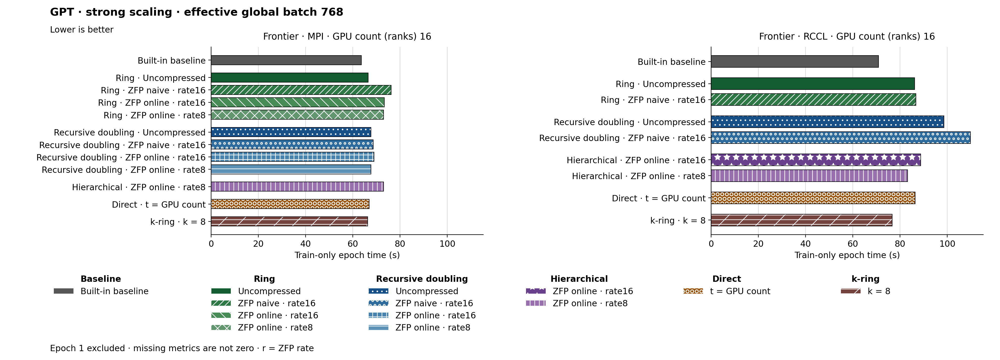

The figure uses hbar. Families and methods are identified by text and patterns in addition to color. The metric is Train-only epoch time (s). Frontier · MPI, GPU count (ranks) 16: Built-in baseline has the lowest plotted value, 63.660. Frontier · RCCL, GPU count (ranks) 16: Built-in baseline has the lowest plotted value, 70.890. Epoch 1 is excluded. Values are medians; when repeated runs are available the selected repeat policy is median. These are not confidence intervals across repeated jobs. Missing or unrecorded metrics are omitted, not set to zero.
| Panel | GPU count (ranks) | Method | Value | Runs |
|---|---|---|---|---|
| Frontier · MPI | 16 | none | 63.66 | 1 |
| Frontier · MPI | 16 | ring | 66.47 | 1 |
| Frontier · MPI | 16 | ring_zfp_naive:16 | 76.29 | 1 |
| Frontier · MPI | 16 | ring_zfp_online_coll:16 | 73.39 | 1 |
| Frontier · MPI | 16 | ring_zfp_online_coll:8 | 72.99 | 1 |
| Frontier · MPI | 16 | recursive_doubling | 67.71 | 1 |
| Frontier · MPI | 16 | recursive_doubling_zfp_naive:16 | 68.66 | 1 |
| Frontier · MPI | 16 | recursive_doubling_zfp_online_coll:16 | 68.93 | 1 |
| Frontier · MPI | 16 | recursive_doubling_zfp_online_coll:8 | 67.73 | 1 |
| Frontier · MPI | 16 | direct_p | 66.92 | 1 |
| Frontier · MPI | 16 | hierarchical_zfp_online_coll:8 | 72.99 | 2 |
| Frontier · MPI | 16 | kring_k8 | 66.26 | 1 |
| Frontier · RCCL | 16 | none | 70.89 | 1 |
| Frontier · RCCL | 16 | ring | 86.16 | 1 |
| Frontier · RCCL | 16 | ring_zfp_naive:16 | 86.71 | 1 |
| Frontier · RCCL | 16 | recursive_doubling | 98.57 | 1 |
| Frontier · RCCL | 16 | recursive_doubling_zfp_naive:16 | 109.78 | 1 |
| Frontier · RCCL | 16 | hierarchical_zfp_online_coll:8 | 83.23 | 1 |
| Frontier · RCCL | 16 | hierarchical_zfp_online_coll:16 | 88.78 | 1 |
| Frontier · RCCL | 16 | direct_p | 86.4 | 1 |
| Frontier · RCCL | 16 | kring_k8 | 76.72 | 1 |